Practica 1
Crear una carpeta llamada Evidencia 2 y modificar la página pasatiempos. Los cambios consistirán en agregar todos los selectores. Selector tipo, clase, id, descendientes, hermanos adyascentes. Para cada selector se debe colocar una imagen del código CSS y una imagen del resultado.
Fecha commits: 26 de febrero al 5 de marzo.
Selector universal (*)
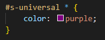Resultado
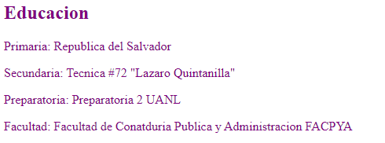Selector de tipo
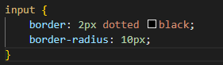Resultado
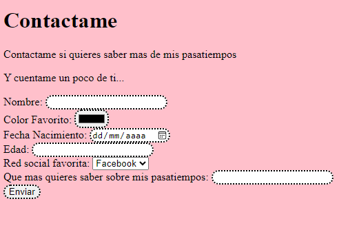Selector de id
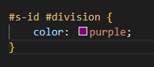Resultado
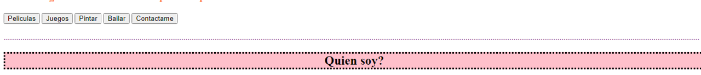Selector por tipo de clase
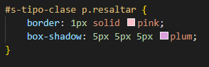Resultado
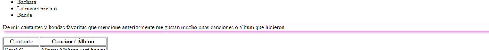Selector de lista
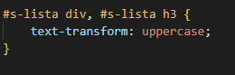Resultado
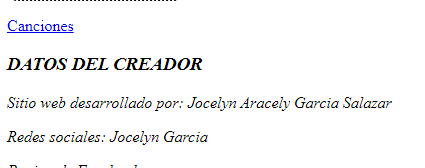Selector descendiente
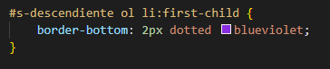Resultado
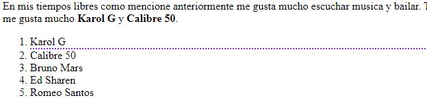Selector hermano adyascentes
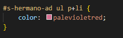Resultado
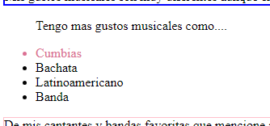Selector clase
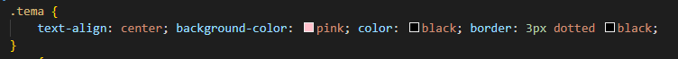Resultado
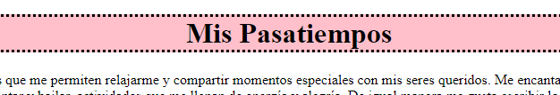Practica 2
Agregar los selectores restantes. Combinadores, Pseudo-elementos y Pseudo-clases.
Fecha commits: 05 al 10 de marzo.
Combinadores CSS
Selector descendiente
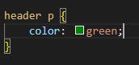Resultado
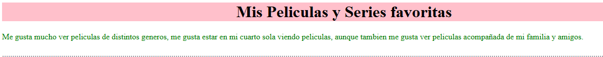Selector descendiente hijo directo
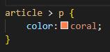Resultado
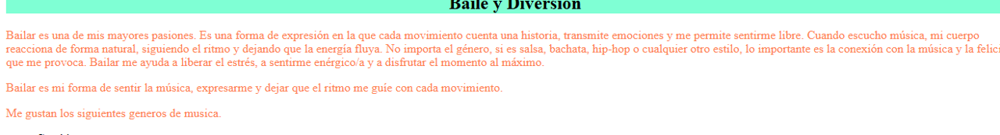Selector hermano general
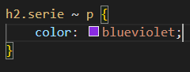Resultado
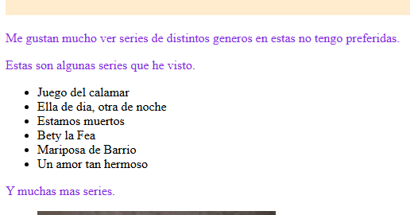Selector hermano adyascentes
Resultado
Pseudo-elementos
First-line
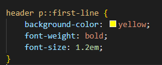Resultado
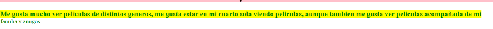First-letter
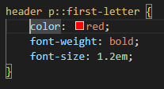Resultado
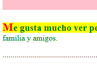Pseudo-clases
First-child
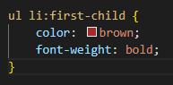Resultado
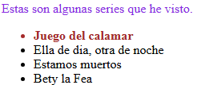Last-child
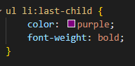Resultado
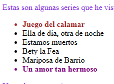nth-child (3)
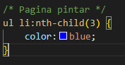Resultado
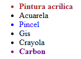nth-child (odd)
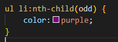Resultado
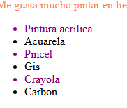nth-child (even)
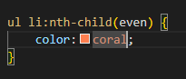Resultado
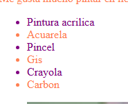Practica 3
Crear un sitio web sobre el tema Lenguajes de programación. Manejar los siguientes apartados para el sitio: index.html. Información principal sobre el tema lenguajes de programación. Un archivo html para cada lenguaje Agregar un archivo html por cada uno de los siguientes lenguajes: python, C++, Java, C, C# y Javascript. Agregar información general del lenguaje: características principales, tipos de datos, ventajas y desventajas. Poner el ejemplo hola mundo en cada lenguaje. El sitio web debe distribuirse utilizando flexbox, grid o una combinación de ambos, además de tener una barra de navegación que permita navegar hacia todo el sitio.
Practica 3
Fecha commits: 31 de marzo al 7 de abril.